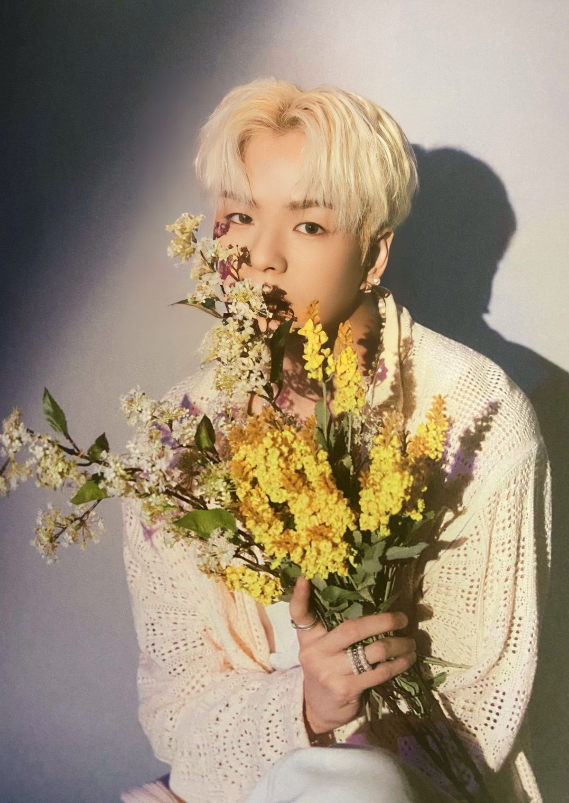

尹材赫 YOON JAE HYUK
2001.07.23 • 🦁🍒

🌟 收到七間公司星探名片，卻是隊內唯一沒參加過甄選的人
尹材赫曾收到 YG、SM、JYP、Woollim、Cube、樂華、Pledis 七間公司的星探名片。第一次拿到 YG 名片時，他還沒有想成為偶像的念頭。後來 YG 在開拍寶石盒的前幾個月又發出邀請，那時他才下定決心，加入 B Team。也因此，他是隊裡唯一沒參加過甄選的成員。
💧 練習幾個月就上寶石盒，被冷落過，也用舞台驚艷過
拍攝寶石盒前隻練習了幾個月，當時唱歌和跳舞都不是特別好。某次分組對抗時沒有被其他成員選擇，但也是在那場表演中的表現驚艷了很多人，包括舞蹈老師也一直跟楊賢碩說材赫的好話。
寶石盒第九集有個被反覆提起的片段：準備舞蹈時一直跟不上大家，也挨了老師很多責罵，材赫哭著說自己已經很努力了卻還是達不到。那個瞬間讓很多人意識到，他和普通人一樣，會努力、會達不到、會無助地掉眼淚。
🎤 定位是 vocal，卻是隱藏 rapper，隊長玹碩的大弟子
明明定位是 vocal，卻是個隱藏的 rapper，也是隊長玹碩的大弟子。甚至在電台上跟另外三個 rap line 成員一起表演過。
☀️ 隊裡的小太陽，搞笑和鼓勵都是認真的
一直都是隊裡的小太陽。很努力地搞笑，很努力地在成員失落時給予鼓勵。與 ASAHI 一起負責舞台下的氣氛，五人以上聚餐必有他吵吵鬧鬧的聲音。親和力強到團綜裡被店裡的老人說要帶回家當女婿。
💬 他的積極不是沒心沒肺的那種。因為知道自己的實力不足，所以更努力地練習唱歌跳舞——他的陽光是建立在「我知道我不夠好，但我在變好」之上的。
🎳 保齡球打不好，怕拖累成員，最後用奇怪姿勢成功
保齡球打得不是很好。在團綜中很害怕拖累成員，所以一直很沒自信，不想自己上場。但成員反而一直鼓勵他，最後終於用奇怪的姿勢成功了。（T-map ep.53）
👾 一些很尹材赫的事
這些事放在一起，是一個親和力強、會搞笑、會自拍、會自導自演、被老人想帶回家當女婿、被成員補辦畢業典禮的人。
📌 入坑路線
| 順序 | 看什麼 | 看什麼點 |
|---|---|---|
| 1 | 寶石盒第九集 | 哭著說跟不上大家的瞬間，先認識平凡而努力的他 |
| 2 | T-map ep.53 保齡球篇 | 沒自信但被成員鼓勵，最後用奇怪姿勢成功 |
| 3 | T-map 畢業典禮篇 | 成員為他補辦的畢業典禮，同學也出鏡 |
| 4 | 香蕉牛奶自拍教學 | 傳奇自拍照的誕生現場 |
| 5 | 電台 rap 表演 | vocal 定位卻是隱藏 rapper，玹碩的大弟子 |
| 6 | 出道後飯拍 | 從寶石盒到出道的進步幅度，肉眼可見 |
🎯 一句話總結
收到七間公司名片卻差點沒當偶像，練習幾個月就上寶石盒被冷落卻用舞台驚艷全場——
他是隊裡的小太陽，是默默努力的小星星，是知道自己不夠好所以更努力的那種人。🍒💙⚡️